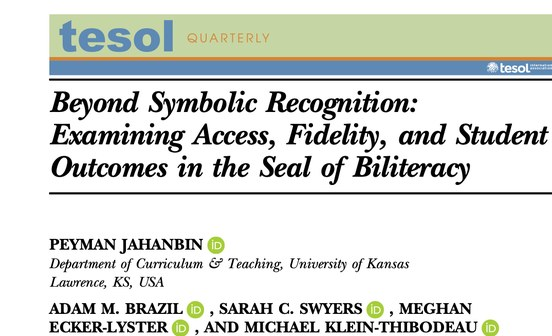

Publications
Journal articles, preprints and manuscripts in review. The same list is on Google Scholar.
Papers
Status
Topic
2026
- Jahanbin, P., & Brazil, A. M. (2026). Too few to count: Small English learner populations and uneven assessment reporting. Bilingual Research Journal.
- Jahanbin, P., Herrick, I. R., Thacker, I., & Choobkar, A. (2026). Measuring university students' ethical judgments of generative AI use: Development and initial validation of four instruments for academic integrity research. Research Square.
- Jahanbin, P. (2026). Acoustic gap placement in second-language read speech production. arXiv.

Jahanbin, P., Brazil, A. M., Swyers, S. C., Ecker-Lyster, M., & Klein-Thibodeau, M. (2026). Beyond symbolic recognition: Examining access, fidelity, and student outcomes in the Seal of Biliteracy. TESOL Quarterly. Advance online publication.- Elizondo-González, J. F., & Jahanbin, P. (2026). A linear logistic test model (LLTM) application in foreign language testing. Research in Pedagogy, 16(2), 146-166.
- Muthusamy, P., Farashaiyan, A., Prasad, R. D., Jahanbin, P., Pattanimuthu, A., Ramalingam, H., Fan, Q., Wang, J., & Zhang, X. (2026). An analysis of dyadic interactional patterns in peer reviewing tasks in an ESL language classroom at a Malaysian higher educational institute. International Journal of Special Education, 41(6s), 1102-1114.
- Jahanbin, P., & Cho, H. (2026). "The accent hides the knowledge": Raciolinguistic gatekeeping and algorithmic suspicion of Middle Eastern graduate teaching assistants in U.S. higher education. Journal of Language, Identity & Education.
2025
- Jahanbin, P. (2025). MFCC-based modeling of L1 influence in L2 English pronunciation: A reproducible methodological pipeline. Research Square.
- Farashaiyan, A., Jahanbin, P., Sinayah, M., Perumal, T., & Ramalingam, S. (2025). A comparative corpus-driven analysis of criticism in book reviews on academic discourse. Corpus Pragmatics, 9(3), 269-291.
- Muthusamy, P., Jahanbin, P., Farashaiyan, A., Perumal, T., Raman, K., Sun, C., Du, J., Qiao, M., & Li, J. (2025). The effect of personality types on ESL university lecturers' creativity in using instructional techniques for online education in Malaysian higher education institutes. Journal of Information Systems Engineering and Management, 10(48s), 533-544.
- Muthusamy, P., Jahanbin, P., Du, J., Qiao, M., Xiang, X., Ramalingam, H., Wang, X., & Farashaiyan, A. (2025). An investigation of students' English achievements and its implications for curriculum amelioration in Malaysian higher education institutions. Journal of Information Systems Engineering and Management, 10(48s), 545-559.
- Jahanbin, P. (2025). A Reproducible MFCC-Based Pipeline for L1 Classification in L2 English Pronunciation Using Python. Reproducible research artifact. Method registration: OSF, April 13, 2025, DOI 10.17605/OSF.IO/4UXGM. Code: Zenodo, April 10, 2025.
2024
- Nushi, M., & Jahanbin, P. (2024). The effect of audio-assisted reading on incidental learning of present perfect by EFL learners. Open Education Studies, 6(1), Article 20240043.
Reports
- Jahanbin, P., Klein-Thibodeau, M., & Brazil, A. M. (2026, August). Too Few to Count: How a Uniform Reporting Threshold Renders Rural English Learners Invisible in Kansas [White paper]. Center for Educational Opportunity Programs, University of Kansas.
Talks
| Mar 2027 | What Does an AI Score Justify?. SITE 2027 · Nashville, TN · brief paper (peer-reviewed), accepted. |
|---|---|
| Mar 2027 | Algorithmic Suspicion: Raciolinguistic Gatekeeping of Middle Eastern Teaching Assistants. TESOL 2027 International Convention & Expo · Houston, TX · roundtable. |
| Oct 2026 | Beyond Symbolic Recognition: Examining Access, Fidelity, and Student Outcomes in the Seal of Biliteracy. MIDTESOL 2026 · Overland Park, KS. With Sarah C. Swyers. |
| Apr 2026 | Correlation Isn’t Enough: Agreement and Decision Risk for Automated Speaking Scores in a Cambridge Dataset. NCIC 2026 Research Program · University of Southern California, Los Angeles. With Imogen R. Herrick. |
| Apr 2026 | Campus Climate Counts: Insights on Institutional Versus Individual Predictors of Academic AI Integrity. AERA · Los Angeles. With Nancy Jo Williams and Atiyeh Choobkar. |
| Oct 2025 | Machine Learning in the Service of Second Language Learning. SCIPIE · Norman, OK. |
| Oct 2024 | EFL Learners Excel: Incidental Grammar Learning through Audio-Assisted Reading. MIDTESOL. |